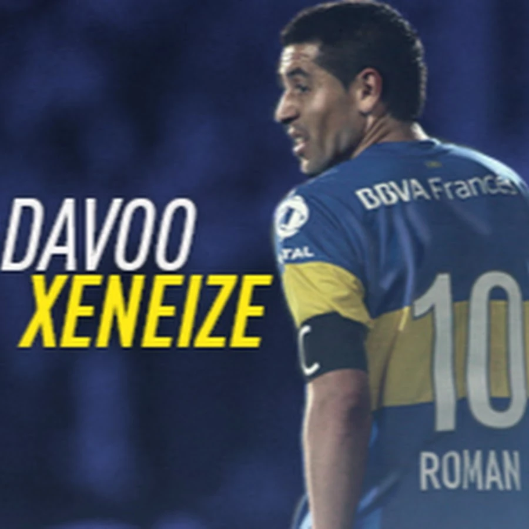
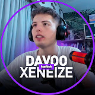

Mi nombre es David Quint, mejor conocido como Davoo Xeneize o simplemente Davo. Soy un youtuber y streamer argentino cuyo contenido se dedica.


Soy un apasionado del fútbol y de Boca Juniors, el club de mis amores.
En mi canal principal, comparto contenido relacionado con el mundo del fútbol, especialmente centrado en Boca Juniors.
Subo videos de análisis de partidos, noticias del club, entrevistas con jugadores y entrenadores, y también comparto momentos destacados de la historia del equipo.